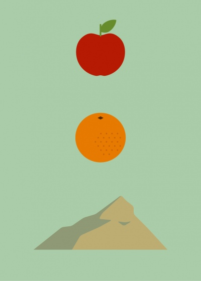
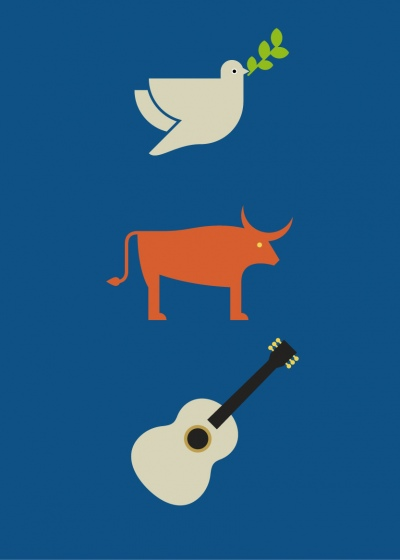

Czy znasz luminarzy malarstwa?
A gdyby tak przyszło nam symbolicznie przedstawić w trzech słowach któregoś ze słynnych artystów? Zakodować ich twórczość w trzech rozpoznawalnych symbolach?
Pokusili się o to graficy ze studia re:design, publikując serię minimalistycznych plakatów pod wspólnym tytułem „Iconic Painters to Guess” (seria pierwsza oraz druga). Zasada jest prosta: wybierz sławnego malarza i sportretuj go za pomocą trzech symbolicznych elementów graficznych. Zapewniam: odgadywanie nazwisk to wyborna zabawa!